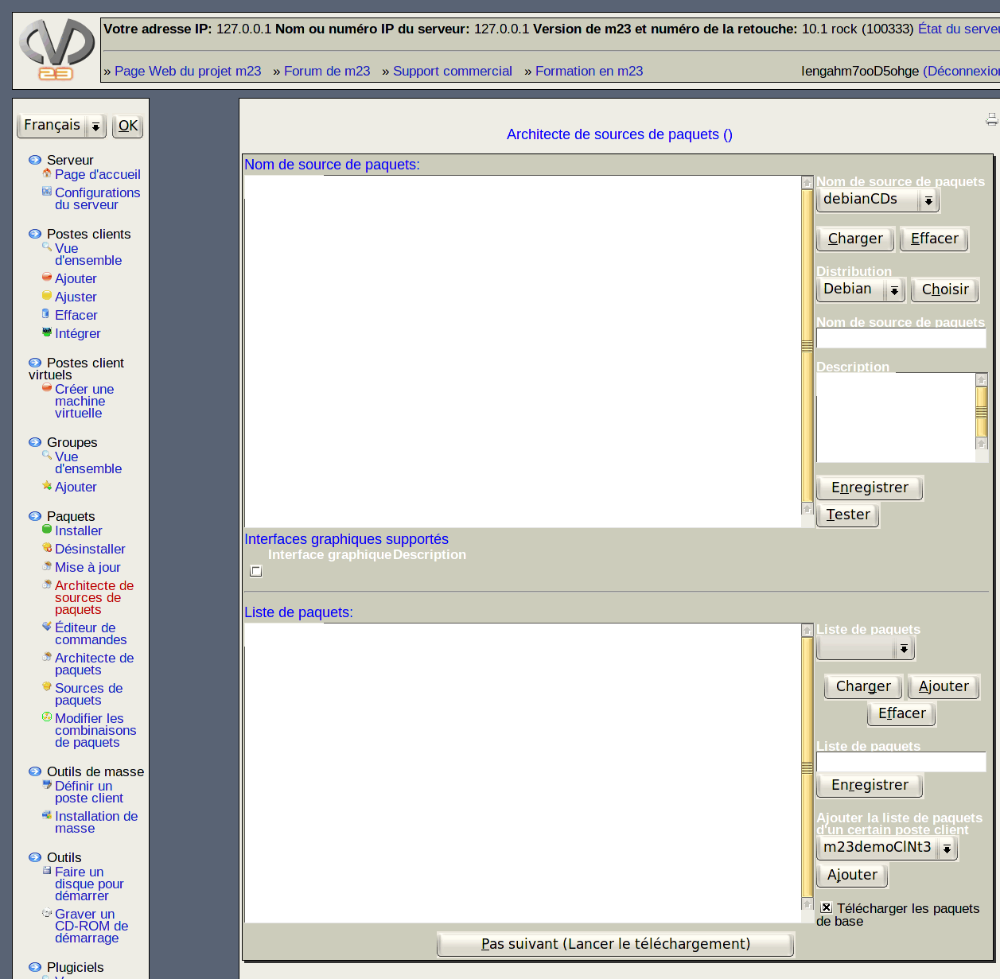

- Choisir le média: Sélectionnez le point de montage à partir duquel vous souhaitez copier les paquets, puis, cliquez sur Copier le média.
- État: En cliquant sur Tester l'état du lecteur vous pouvez voir l'état actuel du lecteur et la taille de la source de paquets.
- Lire des médias additionnels: Après la copie initiale des fichiers, vous pouvez ajouter un nouveau média à utiliser comme source additionnelle de paquets.
- Créer un fichier index: cliquez sur Étape suivante (Créer un index de paquets) lorsque tous vos médias additionnels ont été ajoutés pour continuer le processus.
root
2013-08-18